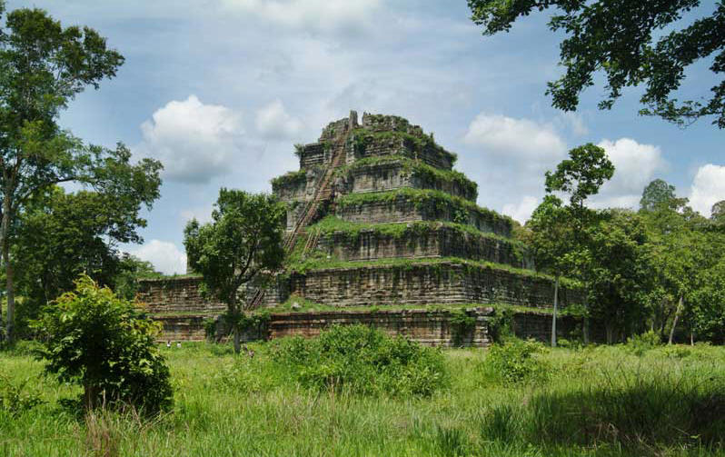
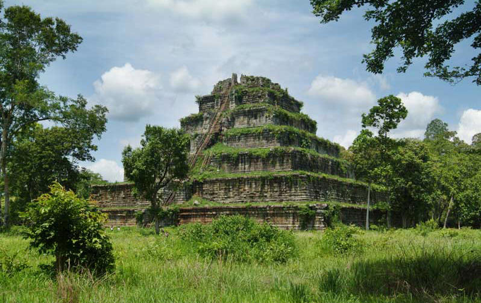

Kor Ker
Koh Ker is a remote archaeological site in northern Cambodia about 120 kilometres (75 mi) away from Siem Reap and the ancient site of Angkor. It is a very jungle filled region that is sparsely populated. More than 180 sanctuaries were found in a protected area of 81 square kilometres (31 sq mi). Only about two dozen monuments can be visited by tourists because most of the sanctuaries are hidden in the forest and the whole area is not fully demined. Koh Ker is the modern name for an important city of the Khmer empire. In inscriptions the town is mentioned as Lingapua (city of lingams) or Chok Gargyar (sometimes translated as city of glance, sometimes as iron tree forest). Under the reign of the kings Jayavarman IV and Harshavarman II Koh Ker was briefly the capital of the whole empire (928–944 AD). Jayavarman IV forced an ambitious building program. An enormous water-tank and about forty temples were constructed under his rule. The most significant temple‑complex, a double sanctuary (Prasat Thom/Prang), follows a linear plan and not a concentric one like most of the temples of the Khmer kings. Unparalleled is the seven‑tiered and 36-metre (118 ft) high pyramid, which most probably served as state temple of Jayavarman IV. Really impressive too are the shrines with the two‑meter 6 ft 7 in high lingas.
Gallery
 
